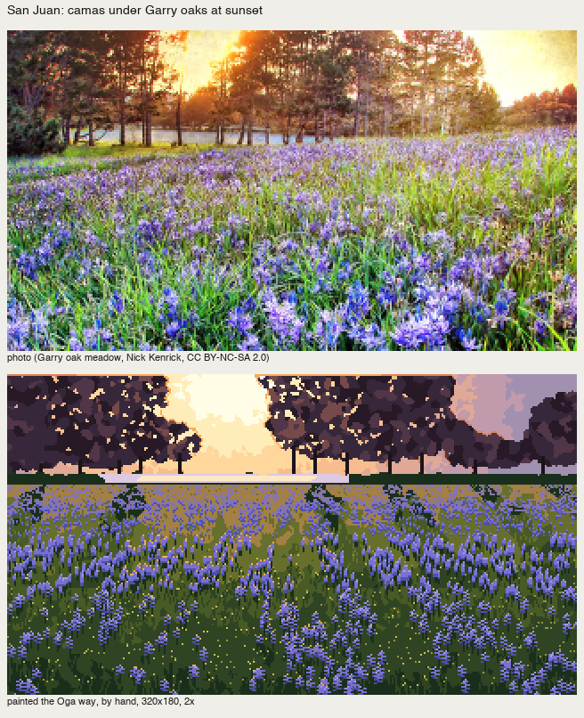
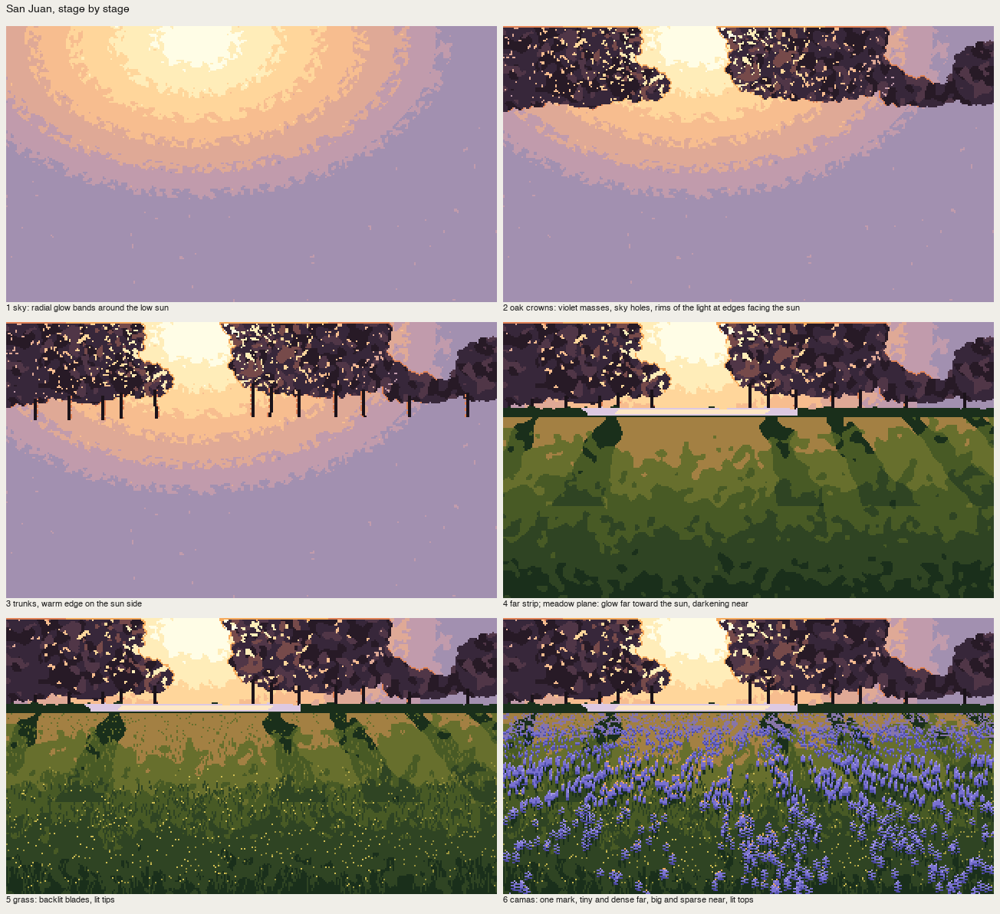
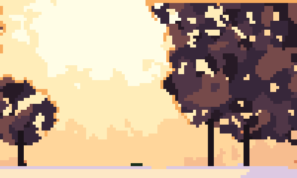
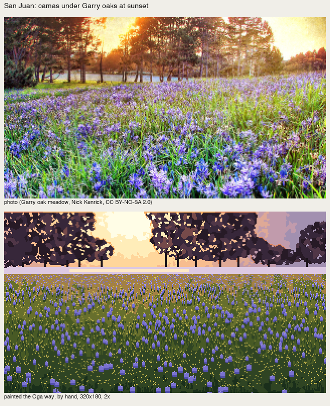
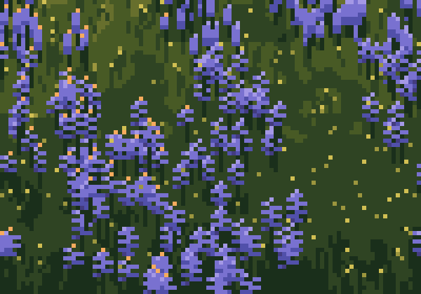

A crowd in drifts, under backlight: San Juan
Front page: the tutorial. Code: places/sanjuan.py. Photo: "Garry Oak Meadow, Victoria BC", Nick Kenrick, CC BY-NC-SA 2.0. It's the same prairie community as the San Juan balds, and I chose it for the camas.
This is my strongest place study, and it's where the principles from how-tos 3–8 come together in one picture. The cold critic called it "the only one where one light and colourful shadow make up the picture." I'll go through it stage by stage, with the code that painted each stage.

fig. The photo (cropped to 320×180) and the painting at 2×.
The decisions, before any pixel
They're written at the top of the script, section by section of the book's model:
- Light: backlight. The sun is low behind the oaks, so everything facing us is in shadow, and the light lives only at edges facing the sun, in the light's colour (際, C-0772), and in the sky seen through the crowns. The book calls backlight the easy case (C2-2, p.97): "shapes as silhouettes, the light easy to place."
- Dusk colour (C58-1A, p.94): warm light, cool shadow, "purple between blue and pink".
- The crowd: oaks as crown masses with sky holes; camas as a crowd of one mark, small and dense far, big and sparse near, organised into drifts.
- The season word (p.104): camas in bloom says "late April on a bald" by itself. Nothing else is needed.

fig. The six stages.
1. The sky: radial glow bands
Seven flat bands around the sun, near-white to rose to violet, with the noise acting only near each seam so the bands stay flat:
d = np.hypot((xx - SUN[0]) * 0.8, (yy - SUN[1]) * 1.3)
t = np.clip(d / 150, 0, 0.999) * 7
n = cv.noise(1.0)
q = np.clip(np.floor(t + 0.35 * n * ((t % 1 < 0.2) | (t % 1 > 0.8))), 0, 6).astype(int)
cv.a[:] = np.array([I[f's{i}'] for i in range(7)])[q]
2. The oak crowns: masses, holes, rims of the light
Five hand polygons give the crown masses. Clumpy edges come from adding small discs along the boundary. The fill is violet darks with broad uneven paint. Sky holes open only near the sun, which is where you'd see through a backlit crown. And the rim: crown pixels next to sky on the sun's side take orange, brighter near the sun:
cv.a[crowns] = I['k2']
cv.mottle(crowns, I['k1'], 0.4, 2.5); cv.mottle(crowns, I['k3'], 0.2, 2.0)
near_sun = np.exp(-d / 90)
holes = crowns & (cv.noise(0.7) > 2.4 - 2.2 * near_sun) & (d < 110)
cv.a[holes] = q[holes] + I['s0'] # the hole shows the sky band behind it
rim = crowns & (np.roll(sky, 1, 0) | np.roll(sky, -1, 1) * (xx < SUN[0]) | np.roll(sky, 1, 1) * (xx > SUN[0])) & (d < 130)
cv.a[rim & (d < 70)] = I['rim1'] # c(0.80, 0.13, 65)
cv.a[rim & (d >= 70)] = I['rim2'] # c(0.70, 0.13, 45)
My first version had holes everywhere in the crowns (nb254), which made lace, not trees.

fig. The crowns at 6×: violet masses, holes near the sun, the orange rim of the light.
3–4. Trunks, the far strip, the meadow as one plane
Trunks are 2-px dark verticals with a warm edge on the sun side. Under them is a dark strip, the oaks' shadow cast toward us, which severs the far bright field from the meadow (p.52). Only right under the sun does it become a glint.
The meadow is one plane, backlit: it glows far and toward the sun, and darkens near. Then the oaks' shadows fall toward us as tongues, fanning away from the sun:
u = (yy - 62) / (H - 62)
glow = np.exp(-np.abs(xx - SUN[0]) / 90) * (1 - u) ** 2
f = u * 3.4 - glow * 1.6 + 0.25 * cv.noise(2.0)
cv.a[meadow] = np.array([I['mglow'], I['m1'], I['m2'], I['m3'], I['m4']])[np.clip(np.floor(f + 1), 0, 4).astype(int)][meadow]
for x0 in (20, 70, 175, 215, 265, 305):
ang = (x0 - SUN[0]) / 140.0 # shadows fan away from the sun
band = meadow & (np.abs(xx - (x0 + ang * (yy - 62))) < 6 + (yy - 62) * 0.18 + 2 * cv.noise(3.0)) & (yy < 120)
cv.a[band] = np.minimum(cv.a[band] + 1, I['m4'])
5. Grass blades: dark, with the light's colour at the tip
Backlit grass is dark against the glow, with a lit tip in the light's colour. Blades get longer toward the viewer, and only one in two long blades gets a tip:
L = 1 + int(uu * 9 * r.uniform(0.5, 1.2))
...
if L > 3 and r.uniform() < 0.5:
cv.put(x + lean * (L - 1), y - L + 1, I['mt'] if (r.uniform() < 0.5 and abs(x - SUN[0]) < 120) else I['mg'])
6. The camas: one mark, organised into drifts
The camas took three tries, and it's the clearest lesson in the study about the book's crowd principle.

nb254. One identical stamp, scattered uniformly: "one identical stamp in even rows."

nb256. Drifts made from sine bands in screen space: rows.
If you draw the miscellany without organising it, it doesn't work as a background. (p.48)
The organisation has to live on the ground, not on the screen. Real camas grows in patches that are roughly round on the ground; seen from a meadow, they flatten and shrink with distance. So the drift field is smooth 2-D noise sampled at ground coordinates: distance gz from the row (a flat-ground approximation) and lateral position gx scaled by distance:
gz = 1.0 / np.maximum((yy - 58) / (H - 58), 0.02) # ~ distance
gx = (xx - W / 2) * gz / 12
Ng = gaussian_filter(rr2.standard_normal((256, 256)), 6, mode='wrap'); Ng /= Ng.std()
drift = map_coordinates(Ng, [(gz * 9) % 256, (gx * 9 + 128) % 256], order=1, mode='wrap') + 0.3 * cv.noise(2.0)
far_patch = meadow & (yy < 78) & (drift > -0.2)
cv.a[far_patch & (cv.noise(0.8) > -0.3)] = I['vfar'] # far: drifts read as violet tone
The mark is one flower spike, drawn at four sizes by distance band: dense and tiny far, big and sparse near. Each is placed only if the drift field says so:
for band_y0, band_y1, n_, size in [(70, 90, 2600, 1), (90, 120, 1300, 2), (120, 150, 500, 3), (150, 184, 220, 4)]:
for k in range(n_):
x = r.uniform(0, W); y = r.uniform(band_y0, band_y1)
if drift[yi, xi] < -0.3 + 0.6 * r.uniform():
continue
if size == 1:
cv.put(x, y, I['v2']); cv.put(x, y + 1, I['v3']); continue
h_ = size + 1 + int(r.integers(0, 3))
cv.line([(x, y + h_ + size), (x, y + h_ // 2)], I['m4']) # stem
for j in range(h_): # florets: offset left/right
off = (1 if (j + int(x)) % 2 else -1) * (size // 3)
...
cv.put(x, y - 1, I['rim1'] if abs(x - SUN[0]) < 60 else I['v1']) # lit top: the light's colour near the sun axis

fig. The near camas at 6×: spikes with alternating florets, stems, a lit top pixel, in patches with gaps.

fig. San Juan, final.
Still weak
The far strip is a little ruled. Near the bottom the camas mark is a touch regular: every spike is the same stack of florets, and a second mark (open flowers seen from above, as the book draws near grass) would help.